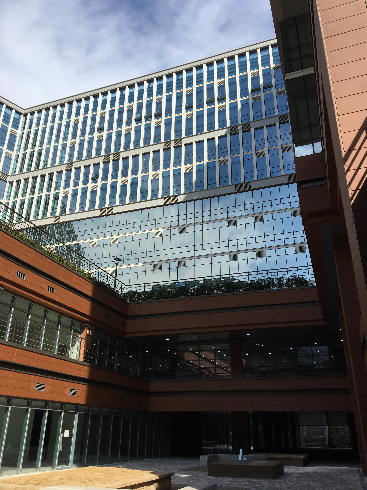

Project / Research
판교 제2테크로밸리 기업성장지원센터 창업지원공간 운영방안 연구
Operational Plans for Startup Support Spaces at Pangyo 2nd Techno Valley

판교 제2테크노밸리 내 창업지원공간의 효율적인 배치와 운영 구조를 연구해, 벤처·스타트업의 성장 단계별 지원과 산학연 교류를 촉진하는 운영방안을 제안한 프로젝트다.
This research project proposed operational strategies for startup support spaces in Pangyo 2nd Techno Valley, aiming to support venture growth and encourage collaboration across industry, academia, and research.
프로젝트 개요
판교 제2테크노밸리 경기기업성장센터 창업지원공간 운영방안 연구는 경기도시공사가 주도한 프로젝트로, 벤처와 스타트업 기업의 성장 단계별 지원 공간을 마련하고 산학연 협력 및 글로벌 네트워크를 촉진할 수 있는 효율적 운영방안을 도출하는 것을 목표로 했다.
연구 대상은 경기 성남시 판교 제2테크노밸리 내 경기 공공지식산업센터 1층 약 3,069제곱미터 규모의 공간으로, 코워킹스페이스, 다목적실과 회의실, 엑셀러레이터 유치 공간, 경기도 홍보관 등이 포함되었다. 단순한 공간 제안을 넘어 지원센터 전체 운영 구조를 입체적으로 검토하는 것이 핵심 과업이었다.
연구는 공간 배치 제안, 회의 및 코워킹 공간 운영 가이드, 엑셀러레이터 유치방안, 홍보관 운영방안, 직영과 위탁운영의 비교 검토 등 총 6개 과업을 중심으로 진행되었다. 이를 통해 창업지원 기능을 수행하는 공공 거점 공간이 실제로 어떤 프로그램과 운영 모델을 갖춰야 하는지 구체화했다.
이 프로젝트는 창업 생태계 지원을 위한 하드웨어 제공에 머무르지 않고, 공간 구성과 운영 체계, 파트너 유치 전략을 함께 설계함으로써 판교 제2테크노밸리의 공공 스타트업 지원 기반을 입체적으로 다룬 연구였다.
This study was led by Gyeonggi Housing & Urban Development Corporation to identify efficient operational plans for startup support spaces at the Gyeonggi Business Growth Center in Pangyo 2nd Techno Valley. Its goal was to establish stage-specific support environments for venture and startup companies while fostering collaboration across industry, academia, research, and global networks.
The study area covered approximately 3,069 square meters on the first floor of the Gyeonggi Public Knowledge Industry Center in Seongnam, including co-working spaces, multipurpose rooms, meeting rooms, accelerator recruitment spaces, and a Gyeonggi promotional hall. The project examined not just the physical layout but the overall operational structure of the support center.
The research was organized around six major tasks, including space layout proposals, operational guides for meeting and co-working spaces, accelerator recruitment strategies, promotional hall management plans, and comparative review of direct and outsourced operations. This helped define what kind of programming and management model a public startup support hub should sustain in practice.
In that sense, the project addressed Pangyo's startup ecosystem not only through spatial provision but through an integrated strategy combining layout, operations, and partnership structures for a public-facing innovation support base.

State. 완료 Completed
Role. 리서치 Research
Partner. 로모 Romor, 공공프리즘 Freezoom
Client. 경기도시공사 Gyeonggi Housing & Urban Development Corporation